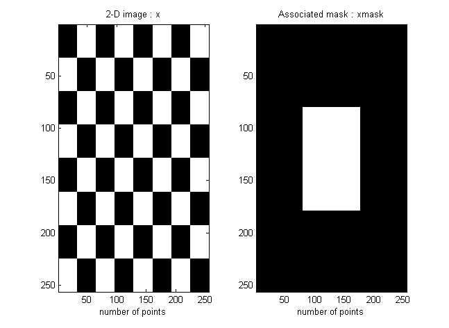
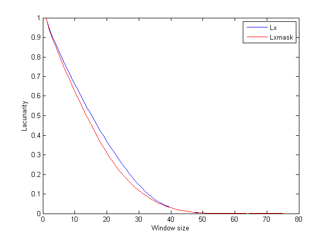

| FRACLAB Functions |
|
Computes the heterogeneity or lacunarity for a 2D signal (an image)
L = lacunarity(x,kv)
L = lacunarity(...,'mask',M)
L = lacunarity(x,kv) Computes the lacunarity L of the image x by centering at each point of x a window and comparing the "mass" in this window to the average mass. A lacunarity is computed for each size of window. The desired different sizes of windows are defined as a list by the input vector kv. Thus the output L of this code is also a vector of lacunarities. If (N1,N2) are the size of x, then the values of kv must be included in the interval [1 : max(N1,N2)].
L = lacunarity(...,'mask',M) Computes the lacunarity L using a specific input mask, M which defines a region where L is really computed. The mask must be the same size as x.
|
Lacunarity for grey level images is computed as follow: |
images_loc = which('lacunarity.html');
x = imread(fullfile(fileparts(images_loc),'images_examples','Dimensions','cheess.png'));
xmask = imread(fullfile(fileparts(images_loc),'images_examples','Dimensions','cheess_mask.png'));
x = ima2mat(x); xmask = ima2mat(xmask);
figure; subplot(1,2,1); imagesc(x); colormap(gray);
xlabel('number of points'); title('2-D image: x');
subplot(1,2,2); imagesc(xmask); xlabel('number of points');title('Associated mask: xmask');


| |
ifstfif | lacunary | |